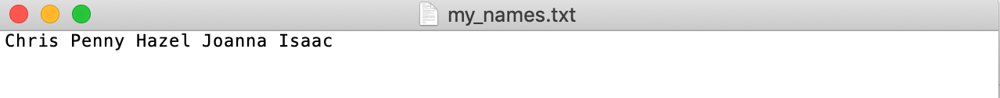
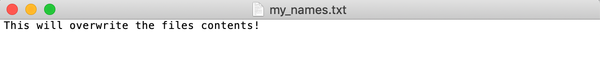
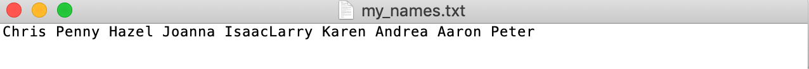
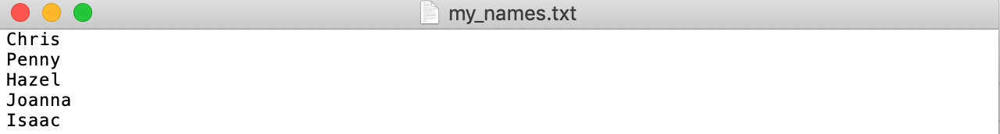
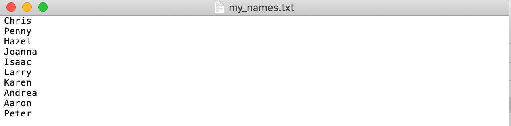
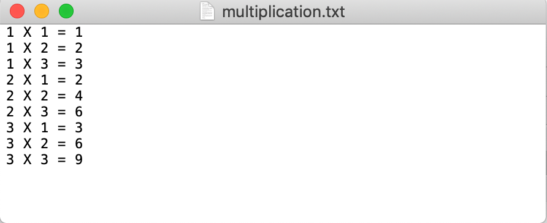

A Quick Intro to Reading and Writing Files¶
In this section we will briefly give an intro with a few examples of reading and writing data from and to files. If you want to learn more, then search reading and writing files on Google. There is a lot more we will not cover here.
Writing to an Existing File¶
To write to an existing file, you must add a parameter to the open() function:
“a” stands for Append and will append to the end of the file.
“w” stand for Write and will overwrite any existing content.
With either of these methods, if the file does not exist it will be created.
f = open('my_names.txt', 'w')
f.write('Chris Penny Hazel Joanna Isaac')
f.close()
Always remember to close the file after opening with close() method.
You can now open the my_names.txt file on your local computer with any simple text editor. The file will be located in the same directory from which you are running your Jupyter Notebook. The contents of the file look like this:

As mentioned above, the write w option will overwrite existing content. Now that the file already exists, because we ran the above code, if we use the w option the contents of the file will be overwritten.
f = open('my_names.txt', 'w')
f.write('This will overwrite the files contents!')
f.close()
Now the contents of the txt file look like this:

Let’s put the names back in the text file.
f = open('my_names.txt', 'w')
f.write('Chris Penny Hazel Joanna Isaac')
f.close()
If you want to append to the file use the a option in the open() function.
f = open('my_names.txt', 'a')
f.write('Larry Karen Andrea Aaron Peter')
f.close()

We did not put a space after “Isaac” or before “Larry” so that is why they appear as “IsaacLarry” in the text file.
If you want to add each name on a separate line you can add
the newline character, \n after each name. We will use the
w option to overwrite the existing file to create a fresh new one.
f = open('my_names.txt', 'w')
f.write('Chris\nPenny\nHazel\nJoanna\nIsaac')
f.close()

Or you could add the names to the text file in a loop like this:
names = ['Chris', 'Penny', 'Hazel', 'Joanna', 'Isaac', 'Larry', 'Karen', 'Andrea', 'Aaron', 'Peter']
f = open('my_names.txt', 'w')
for name in names:
f.write(f'{name}\n')
f.close()

Notice in the above examples we first had to call open() and then close() to first open
and then close the file. It is better practice to use a context manager so that
you do not forget to close your files. The most used example of context managers is the with statement.
It’s good practice to use it when reading and writing files. It will automatically close
the file for you. The previous examples can be rewritten using with like this:
with open('my_names.txt', 'w') as f:
f.write('Chris Penny Hazel Joanna Isaac')
with open('my_names.txt', 'w') as f:
f.write('This will overwrite the files contents!')
names = ['Chris', 'Penny', 'Hazel', 'Joanna', 'Isaac', 'Larry', 'Karen', 'Andrea', 'Aaron', 'Peter']
with open('my_names.txt', 'w') as f:
for name in names:
f.write(f'{name}\n')
Notice that we did not need to call f.close() above.
Here is a final example.
Also note that the name f is just an alias. Here we use file instead of f.
with open('multiplication.txt', 'w') as file:
for i in range(1, 4):
for j in range(1, 4):
file.write(f'{i} X {j} = {i * j}\n')

Reading an Existing File¶
First run this code to get the file created and set up.
names = ['Chris', 'Penny', 'Hazel', 'Joanna', 'Isaac', 'Larry', 'Karen', 'Andrea', 'Aaron', 'Peter']
with open('my_names.txt', 'w') as f:
for name in names:
f.write(f'{name}\n')
Now the contents of my_names.txt should look like the above screen shot. If not, then you can run
the code block above with the for loop. To read the file you can do the following:
with open("my_names.txt", "r") as f: # r for READ
file_contents = f.read()
print(file_contents)
Chris
Penny
Hazel
Joanna
Isaac
Larry
Karen
Andrea
Aaron
Peter
Notice that file_contents is just a single string.
file_contents
'Chris\nPenny\nHazel\nJoanna\nIsaac\nLarry\nKaren\nAndrea\nAaron\nPeter\n'
Instead of reading the entire file contents into a single string, which
may not be very useful, we can read the lines of the file line by line.
Using readline() is one way to do this.
with open("my_names.txt", "r") as f: # r for READ
print(f.readline())
print(f.readline())
print(f.readline())
print(f.readline())
print(f.readline())
Chris
Penny
Hazel
Joanna
Isaac
Or you can use a for loop to iterate over the file.
with open("my_names.txt", "r") as file:
for line in file:
print(line)
Chris
Penny
Hazel
Joanna
Isaac
Larry
Karen
Andrea
Aaron
Peter
lines = []
with open("my_names.txt", "r") as file:
for line in file:
lines.append(line)
lines
['Chris\n',
'Penny\n',
'Hazel\n',
'Joanna\n',
'Isaac\n',
'Larry\n',
'Karen\n',
'Andrea\n',
'Aaron\n',
'Peter\n']
You can achieve the same behavior with readlines().
with open("my_names.txt", "r") as file:
lines = file.readlines()
lines
['Chris\n',
'Penny\n',
'Hazel\n',
'Joanna\n',
'Isaac\n',
'Larry\n',
'Karen\n',
'Andrea\n',
'Aaron\n',
'Peter\n']
There are different ways to get rid of the \n in each line when reading. For example:
with open("my_names.txt", "r") as file:
lines = [line.rstrip() for line in file.readlines()] # strip of the \n character at end of each string
lines
['Chris',
'Penny',
'Hazel',
'Joanna',
'Isaac',
'Larry',
'Karen',
'Andrea',
'Aaron',
'Peter']
There is more that could be said about writing and reading files in Python and working with different file formats. But this section was meant as a brief introduction to spark your interest. You can spend your own time learning more about it by reading resources online.